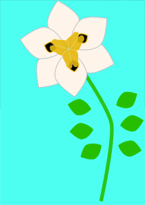
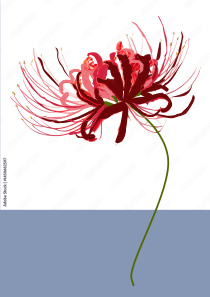
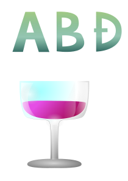
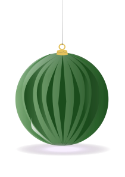
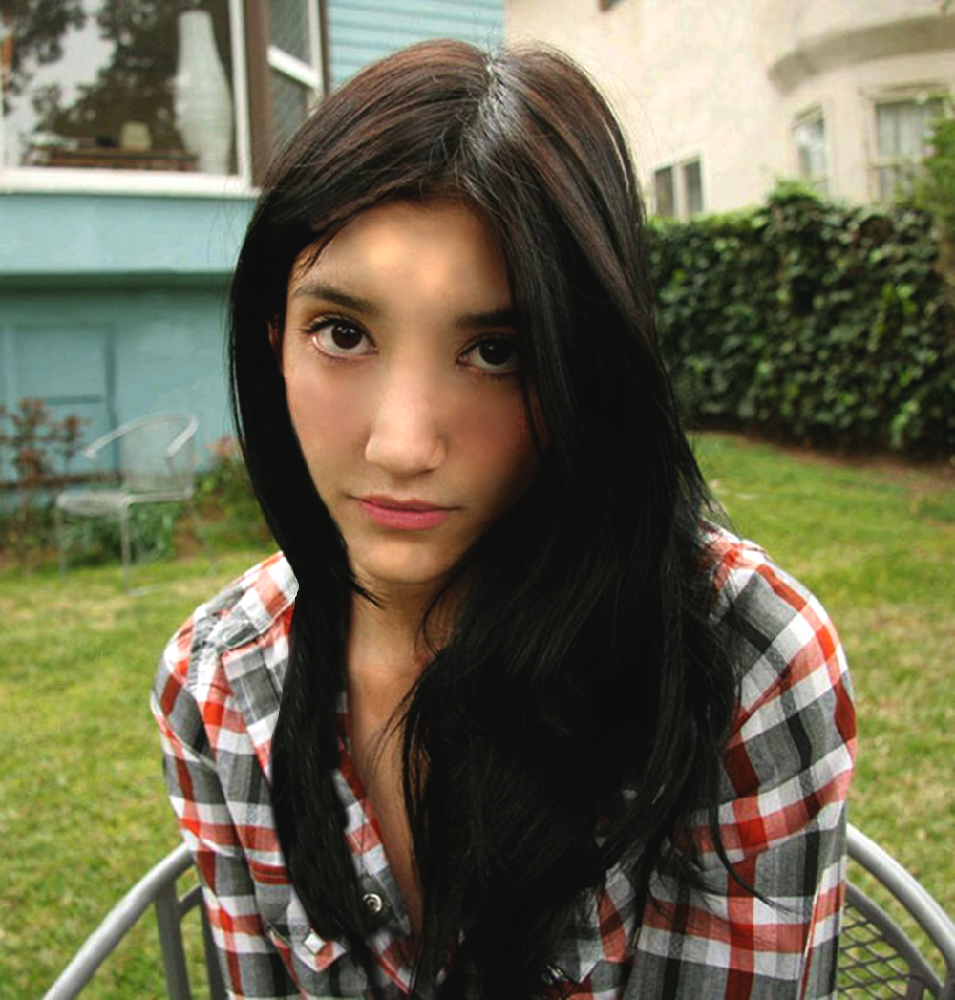

.svg)
Na 1. vježbi smo učili praviti naš vlastiti font.
Moj font (PDF)U 2. vježbi smo učili korištenje Bezierove krivulje u Inkscape-u.
Kada smo došli do 3. vježbe, koristili smo rotacije, scale i transparenciju u Inkscape-u.
 Rad s gradientima i izrada vlastitog rada po želji u Inkscape-u.
 U 5. vježbi smo se upoznali sa Photoshopom i GIMP-om. Ove primjere sam retuširala.

U vježbi prolazimo kroz tehnike neinvazivnog koloriranja slike koje se može primijeniti na crno-bijele slike ili slike u boji kojima želimo promijeniti nijansu određenih područja. Selekcijom željenih dijelova slike stvaramo maske kojima skrivamo ili otkrivamo efekte kolorizacije. Boja se aplicira na zaseban sloj (layer) kako ne bismo uništili originalne tonove i kako bismo mogli lakše napraviti promjene u kasnijim fazama obrade slike.


Iz zadanih slika odabrali smo baznu fotografiju i obradili ostale fotografije na način da su se u bazu umetnuli izrezani elementi. Dodajte barem dva elementa iz vlastitih fotografija. Korigirati boje za usklađenje sa originalnom scenom ili stvoriti drugačije efekte (noć, oblačno, kiša…).

Kreirali smo sliku u Adobe Photoshopu ili GIMPu kao kompoziciju više fotografija koristeći tehnike retuširanja, fotomontaže i koloriranja.

U 8. vježbi smo se susreli s izradom kinemagrafa.

U 9. vježbi smo radili video montažu u Premier-u ili DaVinci Resolve-u.